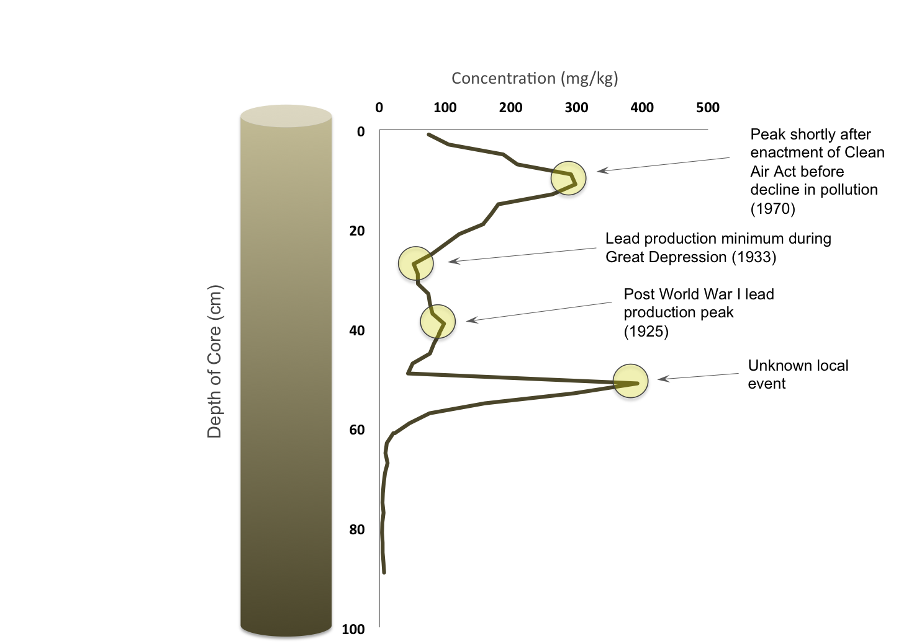
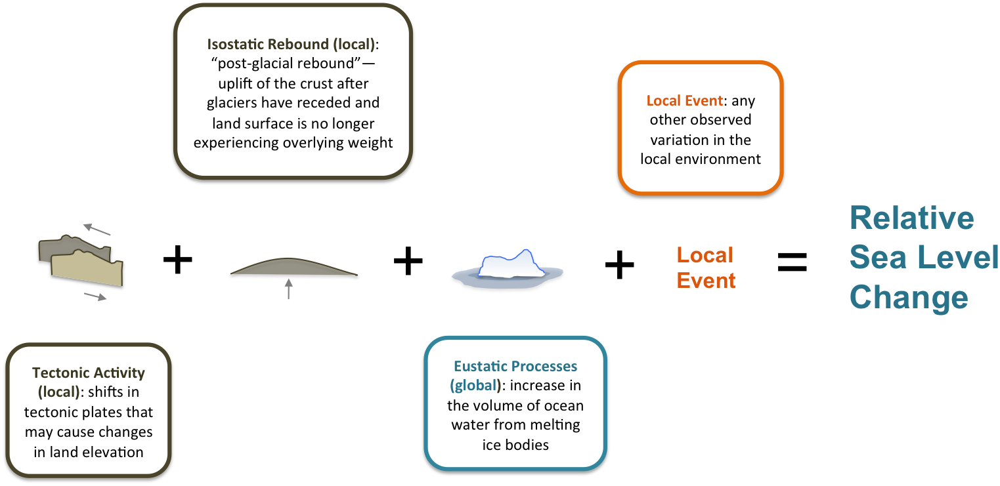

Fossils, Sediment, and Human History as a Combination for Sea Level Research
The history of industrial activities within the United States may surprisingly hold the key to understanding past sea level changes, and therefore provide us with a better forecast of sea level change in the future. Through the examination of the historical record of chemical pollution, along with the presence of microfauna fossils called foraminifera (forams), beach sediments, and radiocarbon dating, scientists have developed a way to recreate relative sea levels. How does paleontology, sedimentology, and human history help us to build this picture?
By using what we know about where forams exist on the marsh surface as well as the dates of extreme industrial chemical output, we can create a timeline of ocean elevation in the past. Relative sea level (RSL) is defined as the position of the ocean relative to the land surface. A rise or fall in either the land surface or the ocean water can be measured as a change in RSL. This means that investigators must eliminate a number of factors to ensure that the measured changes are due to a climate-related change in ocean volume, rather than movement of the earth’s crust.
Industrial activity within the mainstream American economy, and the pollution that accompanies these market industries, has left its mark on marsh sediments along the eastern coast of the United States. For example, when the manufacturing of leaded products was widespread in the United States economy from the mid-1800s to the late 1900s, the pollution from these activities in the form of lead isotopes was deposited on the sediment of areas such as Pelham Bay in the Bronx, New York. It is assumed that at the time that the Upper Mississippi Valley was producing lead, the production emissions were transported by the prevailing winds through the atmosphere northward to the Pelham Bay marsh surface.
Historical changes in the concentration of lead and lead isotopes in the atmosphere consist of precise events, which include dates such as a post World War I production peak in 1925, a lead production minimum during the Great Depression in 1933, and a peak in lead production in 1970 before the passing of the Clean Air Act regulated the industry and caused a sharp decline. These events show up as maxima and minima that are mapped over the course of a 1.5-meter long core of sediment that has been divided up into separate fragments and analyzed for concentrations of chemical pollutants. The extremities in concentrations are then correlated with each pollution history event, which have been documented by historians. The chemicals included in these studies do not only consist of lead, but can also consist of other pollutants, such as vanadium and copper.

Lead Concentration with Depth
After scientists correspond parts of the core to dated events, they then use the frequency of foraminifera (forams), a saltwater microfauna, at each point in the core to determine the elevation of the water level along the beach at that particular point in time. Salt marshes along coastal areas can be divided into sections depending on the relationship between tidal patterns and elevation, ranging from high marsh to low marsh. Forams exist at different depths along ocean marshes depending on their species type. These different species tend to inhabit either of these two elevations based on tidal patterns, as high-marsh forams are less saltwater-tolerant and tend to live at higher depths, and low-marsh forams are more saltwater-tolerant and tend to live at lower depths. Examination of the abundance of different foram species at each depth in the core can lead to an understanding of where along the vertical section of the marsh these sediment samples were deposited. With the addition of aging data collected through traditional radiocarbon dating, this information can be pulled together to recreate a picture of how sea level has shifted along the New York coast, and the rate of RSL change can be determined.
Reconstructing past sea level variations through this method can be time-consuming due to the need for experimenters to collect cores in a range of locations as well as count the number of forams under a microscope. Researchers must also compare the sea level reconstruction to tide gauges in nearby areas in order to assure that the measured sea level changes were not a result of local factors. Variations in the local environment can influence the outcome of any of the experiments conducted in the study. An example of a local factor that may affect the measured levels of chemicals in the core could include a highly concentrated pollution event that occurs in a specific inlet bay or beach area. In order to determine whether an increase in the rates of rising sea level is due to a changing climate and the melting of glaciers, the researchers need to not only exclude local factors but also exclude tectonic events and take into consideration isostatic processes, which can be described as the “rebound” of the crust due to the removal of glacial weight from above it. Through this process of eliminiation, we can isolate the eustatic process (the process of melting ice bodies contributing to ocean volume) as the variable that indicates a change in climate.
As scientists continue to attempt to discern how RSL will change in the near future, the inclusion of new and diversified methods will help experts to develop a more precise and accurate picture of past trends, and therefore be able to predict futures ones. Through the development and advancement of these methods, scientists are likely to find new ways to study climate through pulling information from unlikely places. This intersection between the various fields of science and history may unlock the resources necessary to understand an increasingly significant phenomenon that will continue to produce challenges for human communities going forward.

Simplification of the Factors that Affect Measure of Relative Sea Level
Special Thanks to Dr. Andrew Kemp of Tufts University for Supervision on this Project